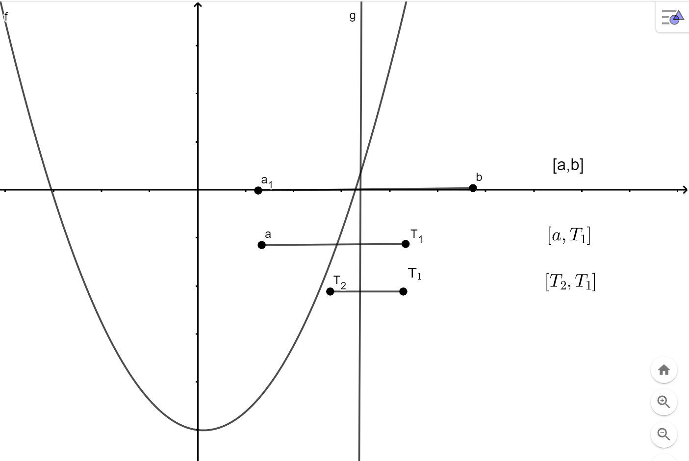

Metode Bagi Dua merupakan metode yang paling sederhana. Sebelum menggunakan metode ini diperlukan satu
selang akar. Idenya selang akar tersebut kita bagi dua sama besar. kemudian pilih satu bagian yang mengandung akar
sebagai selang baru. Hal ini dilakukan secara berulang sampai lebar selang kurang dari toleransi yang diinginkan.
Secara geometris proses tersebut dapat dilihat pada Gambar di bawah ini. Selang akar \([a\) , \(b]\) dibagi dua di \(T_1\)
Terbentuk dua selang yaitu \([a\) , \(T_1]\) dan \([T_1\) , \(b]\). Dari dua selang ini yang memuat akar adalah \([a\) , \(T_1]\) ,
sehingga \([a\) , \(T_1]\) menjadi selang baru. Selanjutnya jika selang baru lebarnya kurang dari toleransi yang
diberikan maka akar dari persamaan adalah \(T_1\). Jika belum memenuhi, bagi dua lagi selang \([a\) , \(T_1]\) , sehingga
diperoleh \(T_2\) dan terbentuk selang baru lagi
\([T_2\) , \(T_1]\) . Proses diteruskan sampai diperoleh selang baru yang lebarnya kurang dari toleransi.

Gambar 1. Metode Bagi Dua
Jika diketahui \((a, f_a)\) dan \((b, f_b)\), maka untuk menentukan \(T\) dapat dihitung dengan rumus:
\(T=\frac{ b + a }{2}\)
Berdasarkan uraian di atas maka algoritma untuk metode bagi dua adalah sebagai berikut:
- Tetapkan selang akar [a,b] sedemikian hingga \(f(a) . f(b) < 0\)
- Hitung titik baru \(T=\frac{ b + a }{2}\)
- Hitung \(f(T)\)
- Jika \(f(a).f(T) < 0\), maka \(b = T\), selang baru \([a, T]\)
Jika \(f(a).f(T) > 0\), maka \(a = T\), selang baru \([T, b]\)
Jika \(f(a).f(T) = 0\), maka akar \(= T\), selesai
- Jika \(|a-b| = |selang\) \(baru| ≤ toleransi\), maka akar adalah \(T\), selesai kembali ke \(1\)